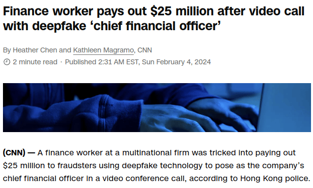
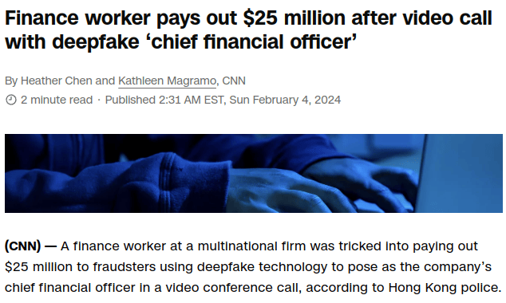

Ask security questions
2024 Feb 09
See all posts
Ask security questions
Special thanks to Hudson Jameson, OfficerCIA and samczsun for feedback and review.
Over the past week, an article has been floating around about a company that lost $25 million when a finance worker was convinced to send a bank wire to a scammer pretending to be the CFO... over what appears to have been a very convincing deepfaked video call.

Deepfakes (ie. AI-generated fake audio and video) are appearing increasingly often both in the crypto space and elsewhere. Over the past few months, deepfakes of me have been used to advertise all kinds of scams, as well as dog coins. The quality of the deepfakes is rapidly improving: while the deepfakes of 2020 were embarrassingly obvious and bad, those from the last few months are getting increasingly difficult to distinguish. Someone who knows me well could still identify the recent video of me shilling a dog coin as a fake because it has me saying "let's f***ing go" whereas I've only ever used "LFG" to mean "looking for group", but people who have only heard my voice a few times could easily be convinced.
Security experts to whom I mentioned the above $25 million theft uniformly confirm that it was an exceptional and embarrassing failure of enterprise operational security on multiple levels: standard practice is to require several levels of sign-off before a transfer anywhere close to that size can be approved. But even still, the fact remains that as of 2024, an audio or even video stream of a person is no longer a secure way of authenticating who they are.
This raises the question: what is?
Cryptographic methods alone are not the answer
Being able to securely authenticate people is valuable to all kinds of people in all kinds of situations: individuals recovering their social recovery or multisig wallets, enterprises approving business transactions, individuals approving large transactions for personal use (eg. to invest into a startup, buy a house, send remittances) whether with crypto or with fiat, and even family members needing to authenticate each other in emergencies. So it's really important to have a good solution that can survive the coming era of relatively easy deepfakes.
One answer to this question that I often hear in crypto circles is: "you can authenticate yourself by providing a cryptographic signature from an address attached to your ENS / proof of humanity profile / public PGP key". This is an appealing answer. However, it completely misses the point of why involving other people when signing off on transactions is useful in the first place. Suppose that you are an individual with a personal multisig wallet, and you are sending off a transaction that you want some co-signers to approve. Under what circumstances would they approve it? If they're confident that you're the one who actually wants the transfer to happen. If it's a hacker who stole your key, or a kidnapper, they would not approve. In an enterprise context, you generally have more layers of defense; but even still, an attacker could potentially impersonate a manager not just for the final request, but also for the earlier stages in the approval process. They may even hijack a legitimate request-in-progress by providing the wrong address.
And so in many cases, the other signers accepting that you are you if you sign with your key kills the whole point: it turns the entire contract into a 1-of-1 multisig where someone needs to only grab control of your single key in order to steal the funds!
This is where we get to one answer that actually makes some sense: security questions.
Security questions
Suppose that someone texts you claiming to be a particular person who is your friend. They are texting from an account you have never seen before, and they are claiming to have lost all of their devices. How do you determine if they are who they say they are?
There's an obvious answer: ask them things that only they would know about their life. These should be things that:
- You know
- You expect them to remember
- The internet does not know
- Are difficult to guess
- Ideally, even someone who has hacked corporate and government databases does not know
The natural thing to ask them about is shared experiences. Possible examples include:
- When the two of us last saw each other, what restaurant did we eat at for dinner, and what food did you have?
- Which of our friends made that joke about an ancient politician? And which politician was it?
- Which movie did we recently watch that you did not like?
- You suggested last week that I chat with ____ about the possibility of them helping us with ____ research?

Actual example of a security question that someone recently used to authenticate me.
The more unique your question is, the better. Questions that are right on the edge where someone has to think for a few seconds and might even forget the answer are good: but if the person you're asking does claim to have forgotten, make sure to ask them three more questions. Asking about "micro" details (what someone liked or disliked, specific jokes, etc) is often better than "macro" details, because the former are generally much more difficult for third parties to accidentally be able to dig up (eg. if even one person posted a photo of the dinner on Instagram, modern LLMs may well be fast enough to catch that and provide the location in real time). If your question is potentially guessable (in the sense that there are only a few potential options that make sense), stack up the entropy by adding another question.
People will often stop engaging in security practices if they are dull and boring, so it's healthy to make security questions fun! They can be a way to remember positive shared experiences. And they can be an incentive to actually have those experiences in the first place.
Complements to security questions
No single security strategy is perfect, and so it's always best to stack together multiple techniques.
- Pre-agreed code words: when you're together, intentionally agree on a shared code word that you can later use to authenticate each other.
- Perhaps even agree on a duress key: a word that you can innocently insert into a sentence that will quietly signal to the other side that you're being coerced or threatened. This word should be common enough that it will feel natural when you use it, but rare enough that you won't accidentally insert it into your speech.
- When someone is sending you an ETH address, ask them to confirm it on multiple channels (eg. Signal and Twitter DM, on the company website, or even through a mutual acquaintance)
- Guard against man-in-the-middle attacks: Signal "safety numbers", Telegram emojis and similar features are all good to understand and watch out for.
- Daily limits and delays: simply impose delays on highly consequential and irreversible actions. This can be done either at policy level (pre-agree with signers that they will wait for N hours or days before signing) or at code level (impose limits and delays in smart contract code)
A potential sophisticated attack where an attacker impersonates an executive and a grantee at multiple steps of an approval process. Security questions and delays can both guard against this; it's probably better to use both.
Security questions are nice because, unlike so many other techniques that fail because they are not human-friendly, security questions build off of information that human beings are naturally good at remembering. I have used security questions for years, and it is a habit that actually feels very natural and not awkward, and is worth including into your workflow - in addition to your other layers of protection.
Note that "individual-to-individual" security questions as described above are a very different use case from "enterprise-to-individual" security questions, such as when you call your bank to reactivate your credit card after it got deactivated for the 17th time after you travel to a different country, and once you get past the 40-minute queue of annoying music a bank employee appears and asks you for your name, your birthday and maybe your last three transactions. The kinds of questions that an individual knows the answers to are very different from what an enterprise knows the answers to. Hence, it's worth thinking about these two cases quite separately.
Each person's situation is unique, and so the kinds of unique shared information that you have with the people you might need to authenticate with differs for different people. It's generally better to adapt the technique to the people, and not the people to the technique. A technique does not need to be perfect to work: the ideal approach is to stack together multiple techniques at the same time, and choose the techniques that work best for you. In a post-deepfake world, we do need to adapt our strategies to the new reality of what is now easy to fake and what remains difficult to fake, but as long as we do, staying secure continues to be quite possible.
Ask security questions
2024 Feb 09 See all postsSpecial thanks to Hudson Jameson, OfficerCIA and samczsun for feedback and review.
Over the past week, an article has been floating around about a company that lost $25 million when a finance worker was convinced to send a bank wire to a scammer pretending to be the CFO... over what appears to have been a very convincing deepfaked video call.

Deepfakes (ie. AI-generated fake audio and video) are appearing increasingly often both in the crypto space and elsewhere. Over the past few months, deepfakes of me have been used to advertise all kinds of scams, as well as dog coins. The quality of the deepfakes is rapidly improving: while the deepfakes of 2020 were embarrassingly obvious and bad, those from the last few months are getting increasingly difficult to distinguish. Someone who knows me well could still identify the recent video of me shilling a dog coin as a fake because it has me saying "let's f***ing go" whereas I've only ever used "LFG" to mean "looking for group", but people who have only heard my voice a few times could easily be convinced.
Security experts to whom I mentioned the above $25 million theft uniformly confirm that it was an exceptional and embarrassing failure of enterprise operational security on multiple levels: standard practice is to require several levels of sign-off before a transfer anywhere close to that size can be approved. But even still, the fact remains that as of 2024, an audio or even video stream of a person is no longer a secure way of authenticating who they are.
This raises the question: what is?
Cryptographic methods alone are not the answer
Being able to securely authenticate people is valuable to all kinds of people in all kinds of situations: individuals recovering their social recovery or multisig wallets, enterprises approving business transactions, individuals approving large transactions for personal use (eg. to invest into a startup, buy a house, send remittances) whether with crypto or with fiat, and even family members needing to authenticate each other in emergencies. So it's really important to have a good solution that can survive the coming era of relatively easy deepfakes.
One answer to this question that I often hear in crypto circles is: "you can authenticate yourself by providing a cryptographic signature from an address attached to your ENS / proof of humanity profile / public PGP key". This is an appealing answer. However, it completely misses the point of why involving other people when signing off on transactions is useful in the first place. Suppose that you are an individual with a personal multisig wallet, and you are sending off a transaction that you want some co-signers to approve. Under what circumstances would they approve it? If they're confident that you're the one who actually wants the transfer to happen. If it's a hacker who stole your key, or a kidnapper, they would not approve. In an enterprise context, you generally have more layers of defense; but even still, an attacker could potentially impersonate a manager not just for the final request, but also for the earlier stages in the approval process. They may even hijack a legitimate request-in-progress by providing the wrong address.
And so in many cases, the other signers accepting that you are you if you sign with your key kills the whole point: it turns the entire contract into a 1-of-1 multisig where someone needs to only grab control of your single key in order to steal the funds!
This is where we get to one answer that actually makes some sense: security questions.
Security questions
Suppose that someone texts you claiming to be a particular person who is your friend. They are texting from an account you have never seen before, and they are claiming to have lost all of their devices. How do you determine if they are who they say they are?
There's an obvious answer: ask them things that only they would know about their life. These should be things that:
The natural thing to ask them about is shared experiences. Possible examples include:
Actual example of a security question that someone recently used to authenticate me.
The more unique your question is, the better. Questions that are right on the edge where someone has to think for a few seconds and might even forget the answer are good: but if the person you're asking does claim to have forgotten, make sure to ask them three more questions. Asking about "micro" details (what someone liked or disliked, specific jokes, etc) is often better than "macro" details, because the former are generally much more difficult for third parties to accidentally be able to dig up (eg. if even one person posted a photo of the dinner on Instagram, modern LLMs may well be fast enough to catch that and provide the location in real time). If your question is potentially guessable (in the sense that there are only a few potential options that make sense), stack up the entropy by adding another question.
People will often stop engaging in security practices if they are dull and boring, so it's healthy to make security questions fun! They can be a way to remember positive shared experiences. And they can be an incentive to actually have those experiences in the first place.
Complements to security questions
No single security strategy is perfect, and so it's always best to stack together multiple techniques.
A potential sophisticated attack where an attacker impersonates an executive and a grantee at multiple steps of an approval process. Security questions and delays can both guard against this; it's probably better to use both.
Security questions are nice because, unlike so many other techniques that fail because they are not human-friendly, security questions build off of information that human beings are naturally good at remembering. I have used security questions for years, and it is a habit that actually feels very natural and not awkward, and is worth including into your workflow - in addition to your other layers of protection.
Note that "individual-to-individual" security questions as described above are a very different use case from "enterprise-to-individual" security questions, such as when you call your bank to reactivate your credit card after it got deactivated for the 17th time after you travel to a different country, and once you get past the 40-minute queue of annoying music a bank employee appears and asks you for your name, your birthday and maybe your last three transactions. The kinds of questions that an individual knows the answers to are very different from what an enterprise knows the answers to. Hence, it's worth thinking about these two cases quite separately.
Each person's situation is unique, and so the kinds of unique shared information that you have with the people you might need to authenticate with differs for different people. It's generally better to adapt the technique to the people, and not the people to the technique. A technique does not need to be perfect to work: the ideal approach is to stack together multiple techniques at the same time, and choose the techniques that work best for you. In a post-deepfake world, we do need to adapt our strategies to the new reality of what is now easy to fake and what remains difficult to fake, but as long as we do, staying secure continues to be quite possible.